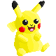
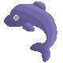
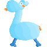

P.D.N.I
Projet Data Non Identifié
Prologue
Vous souvenez-vous de la première fois où vous avez vu des aliens à la télé ? Moi oui, c’était devant E.T. J’ai été fasciné par ces petits êtres différents venus d’ailleurs et comme de nombreuses personnes je me suis demandé: « Et si ils existaient vraiment ? »
« Et si ils existaient vraiment ? »
Et si quelque part dans l'immensité de l’univers d’autres formes de vies vivaient sur une planète avec une technologie différente de la nôtre? Une technologie plus avancée, plus exceptionelle qui leur permettrait de voyager dans l’espace et qui sait, un jour, d’arriver jusqu’à nous sur terre...
Êtes-vous certain que ça n'est jamais arrivé ?
Un projet interactif
Curieux de connaitre le nombre d’OVNI recencés en Union Européenne ?
Le projet P.D.N.I. regroupe toutes les données recencées à propos des ovnis aperçus en Union Européenne. Tirés d’une base de données nationale en ligne, nos informations ont été triées et manipulées par notre équipe. Le projet intègre un système de filtre par formes d’ovni, d’un tri par date et d’une carte interactive pour faciliter votre expérience.
-
Explorez la carte !
Déplacez-vous à travers l’Union Européenne grâce à la map intéractive. Rien de plus facile qu’un simple clic !
-
Remontez le temps !
Avec la ligne du temps, voyagez du vingtième siècle jusqu’à aujourd’hui afin de connaître toutes les observations d’ovnis sur les 120 dernières années.
-
Des formes diversifiées
Un système de tri avec plus de 19 formes d’ovnis designées dans un style retro-gaming.
A vous de jouer !
Combinez notre map avec notre ligne du temps et notre liste de formes afin d’obtenir un outil ultra puissant fournissant rapidemment toutes les informations sur les différentes observations d’ovnis au cours de l’histoire.v
Le saviez-vous ?
Si vous appuyez sur le bouton Fun Fact, vous allez découvrir des statistiques avec les OVNI incroyables.
Notre équipe
-

Dylan
Le seigneur du Javascript, un peu trop passionné et un ego dans la moyenne. Avec une prononciation approximative de 18, “c’est terrible” par jour, son corps est composé de 67 % de café et 33 % de mojito.
-

Thibault
Développeur attitré des sliders que l’on a jamais utilisés pour le projet. C’est un être polyvalent qui tourne au cacao chaud et qui lance les projets figma. Il se nourrit essentiellement de pâtes et de sandwichs le midi.
-
Noa
Créatrice des SVG, des assets et support polyvalent de l’équipe. Consommatrice à temps complet de caféine, elle s’est prise de passion pour le pixel art durant le projet, ses nuits en sont impactées depuis.
-

Romain
Le professionnel d’after effect et d’illustrator. Inventeur d’affiches et de produits vidéos pour illustrer le projet. Il soulève de la fonte à midi pendant que le reste de l’équipe mange Burger King. C’est probablement celui qui vivra le plus longtemps.